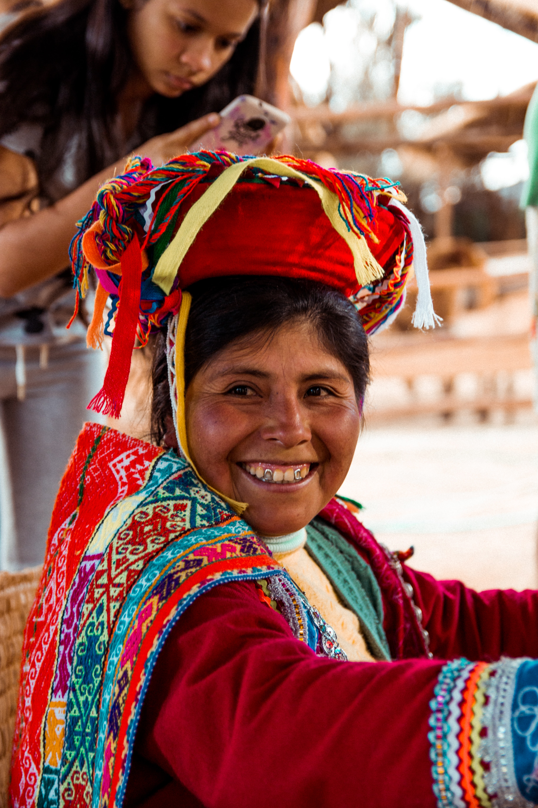

See resources

Dictionaries and Phrasebooks
- Lonely Planet Quechua Phrasebook & Dictionary 5 by Serafin M. Coronel-Molina
Amazon
- Quechua Spanish English Dictionary: A Hippocrene Trilingual Reference by Odi Gonzales, Christine Mladic Janney, and Emily Fjaellen Thompson
Amazon
Textbooks and Studies on the Language
- Aprende a hablar quechua: desde cero (Spanish Edition) by Mario Espinoza
Amazon
- Kawsay Vida: A Multimedia Quechua Course for Beginners and Beyond by Rosaleen Howard
Amazon | UTPress | Barnes & Noble | eBay
- Quechua Cusqueño: Year One by Douglas Cooke
Amazon
- Remaking Kichwa: Language and Indigenous Pluralism in Amazonian Ecuador (Bloomsbury Studies in Linguistic Antrhopology) by Michael Wroblewski
Amazon
- Qayna, Kunan, Paqarin. Una Introducción Práctica al Quechua Chanca
Pontificia Universidad Católica del Perú
Books Written in Quechua
- Signs, Songs, and Memory in the Andes: Translating Quechua Language and Culture by Regina Harrison
Amazon
Podcasts
- Rimasun - Quechua Language Podcasts
PlayerFM
Interviews
text
Bible Recordings in Quechua
Other Audio Recordings
YouTube
Online Courses
Teachers and Tutors
University Courses
The Quechua Library is an open source project with the goal of creating a large directory of Quechua language resources
for learners, speakers, and anyone else with an interest in the language.
As the project is open source, anyone can contribute and help make the website and its contents bigger and better!
If you would like to get involved with the project you can visit the project repository
on GitHub,
or get in contact with the project's maintainer by sending an email to mail@quechualibrary.com.
Contributors
Taylor Shakespear (maintainer) @poetsec